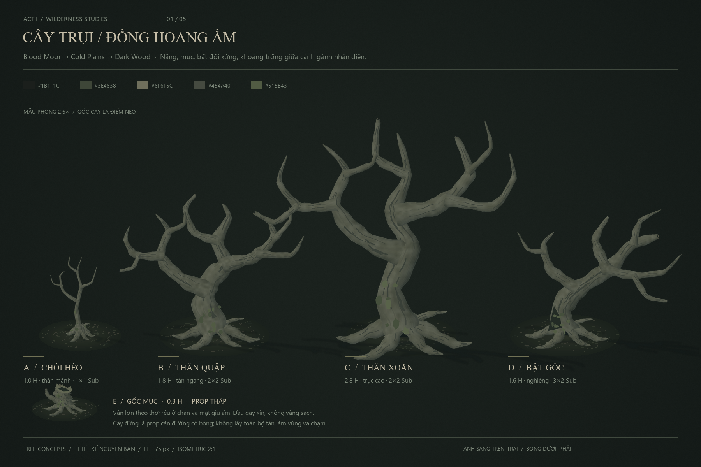
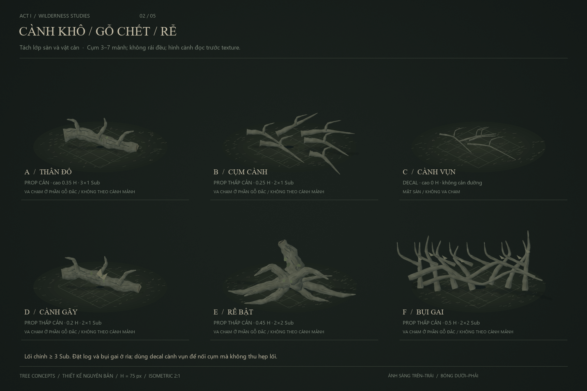
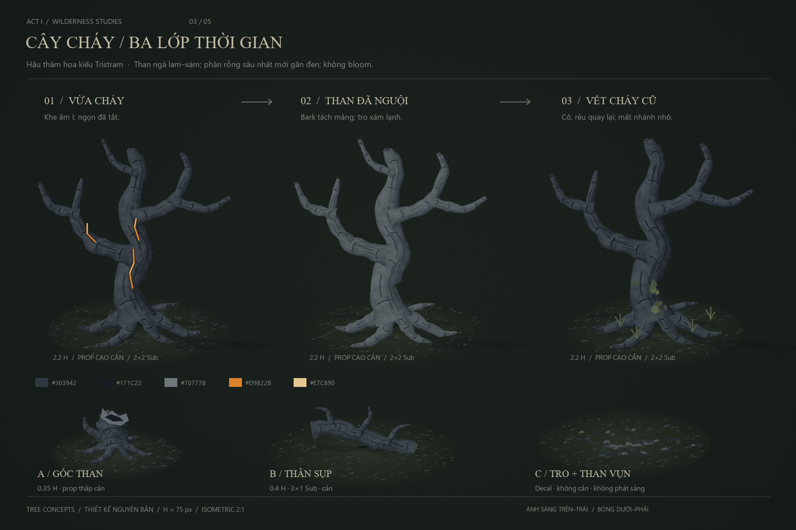
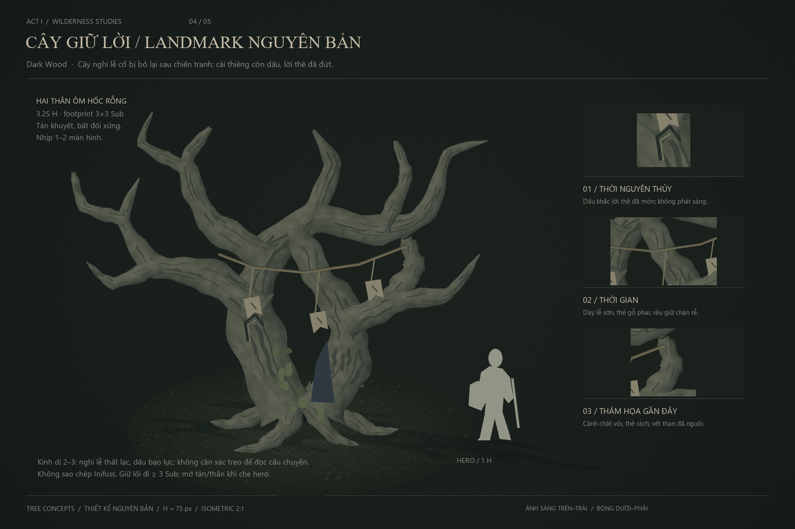
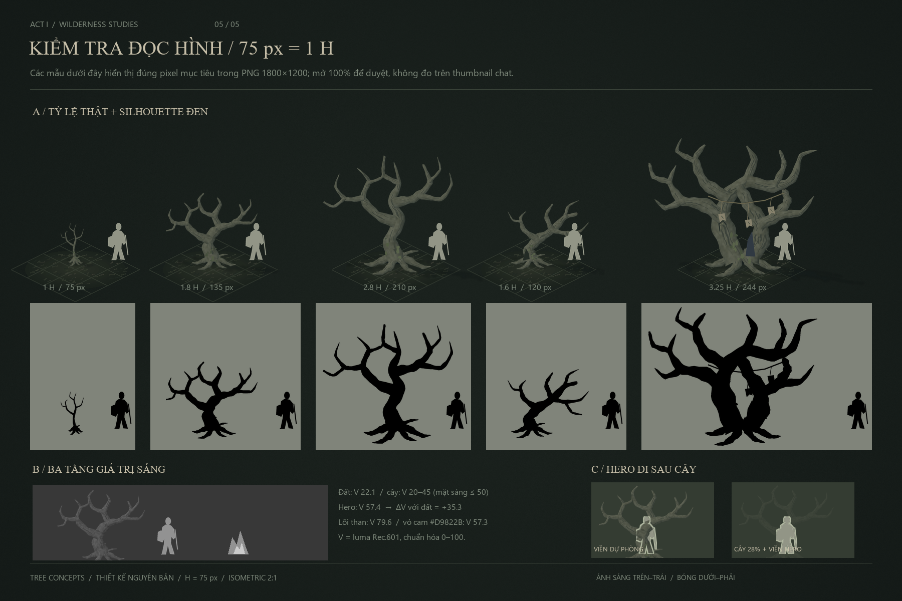

Chồi 1 H · cây quặp 1.8 H · cây xoắn 2.8 H · cây nghiêng 1.6 H · gốc 0.3 H.

Decal cành vụn không cản đường; gỗ đặc và bụi gai là prop thấp ≤0.5 H.

Vừa cháy → than nguội → thiên nhiên chiếm lại. Cam chỉ ở biến thể vừa cháy; không bloom.

Cây Giữ Lời · 3.25 H · dấu thề, dây lễ cũ, cành bị chặt · thiết kế nguyên bản.

Mở PNG ở 100% để đo hero 75 px; preview trong chat tự thu theo chiều rộng cửa sổ.
5 PNG · 1800 × 1200Hero +35.3 V so với đấtThan hồng 1.50% diện tích cây mới cháy